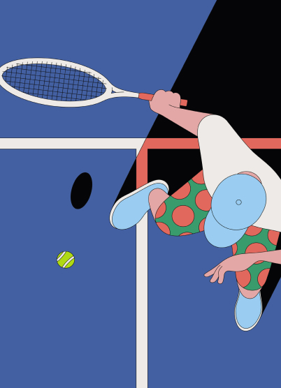
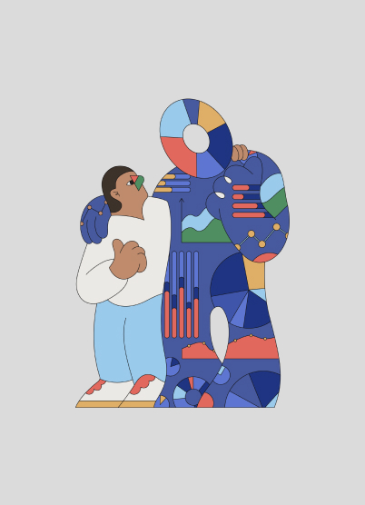
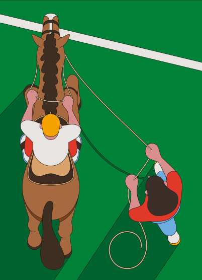
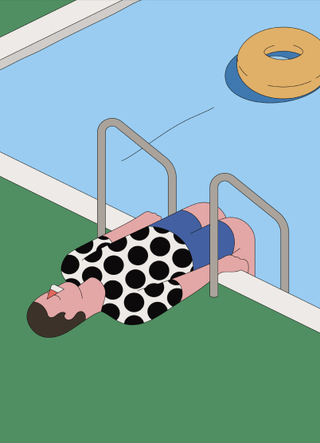

Camilo Huinca

Camilo Huinca is a Chilean artist whose vibrant work blends graphic design and painting. He founded Perfe Studio in 2014, focusing on commercial design while keeping illustration personal. His style emphasizes simplicity, synthesis, and minimal detail, using few tools and colors. Inspired by everyday life, he explores behavior, gestures, and intimate moments in a psychedelic visual language. Camilo aims to communicate with curiosity and innocence, capturing real scenes from a neutral, observational point of view.



